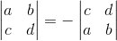

十大属性
行列式首先要了解的是其十大属性：
1. 单位矩阵的行列式值为1，记为：

2. 在行列式里，交换行会改变其正负性，即每换一行其值正负交换一次，举例：

3. 行列式里的每一行单独（注意是单独一行）具有线性性质，举例：
4. 如果行列式里有两行相等，那么其行列式为0，举例：
证明：如果有两行相等，那么交换并不会改变该行列式，但性质2表明其会换号，所以只能为0。
5. 行列式第k行加上第i行的j倍，其值不变，举例：
证明：可以利用性质3将行列式拆开，再利用性质4得到最终结果：
6. 如果行列式有一行全为0，那么该行列式值为0，举例：
证明：可以利用性质3将行列式拆开，0乘以任何数都为0：
7. 三角矩阵其行列式值为对角线上的值的乘积，举例：
证明：可以利用性质3先用消元法将矩阵转换成对角矩阵，其行列式值不变，然后利用性质3把对角线上的值提取出来：
8. 当矩阵是奇异矩阵（奇异矩阵就是矩阵秩小于n的n阶方阵）时，其行列式为0；当矩阵可逆时，其行列式不为0。
证明：当矩阵是奇异矩阵时，肯定能通过消元转换成有一零行的存在，所以行列式为0；当矩阵可逆时，相当于矩阵秩等于n的n阶方阵，其不可能转换成有零行的存在，对角线上也不可能出现0，所以不为0。
9. AB的行列式等于A的行列式乘以B的行列式：
这时有些例子需要说明下：
10. A的行列式等于A转置的行列式：
证明：可以利用LU分解，由于三角矩阵行列式只跟对角线有关，所以：
行列式计算
那么行列式该如何计算？我们可以利用消元法将原先矩阵变成三角矩阵后，其对角线上的元素的乘积就是其行列式的值。
此外，我们还有一种通用的行列式求值公式，我们先来看下一个2*2的行列式求值：
我们通过刚刚的推导，可以推出n维的行列式的求值，就是不断把原来行列式拆成单元矩阵I后再进行运算。且同时发现，不同行的元素肯定不能处在同一列，因为这会出现一整列为0的情况导致整个行列式为0，所以不同行的元素得处在不同列上。
那么，这里有个问题，n维的行列式其总共有多少个不为0的子行列式组合？答案是n!个，因为我们首先可以确定第一行不为0的元素的位置，总共有n个位置，接下来确定第二行，n-1个位置，第三行n-2个位置，第n行只有一个位置，全部相乘就是n!。
这时我们可以推出一个一般公式，假定有一n*n的矩阵A：

其行列式的值为：
其中，正负号视具体情况而定。
除此之外，还有另外一种通用的方法，就是行列式展开，这方法基于刚刚那种做法，只是把公式里的数字转换成行列式的形式，这里我不再赘述了，直接引用维基百科：
行列式不多讲，下一节